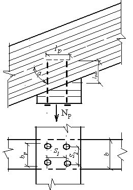
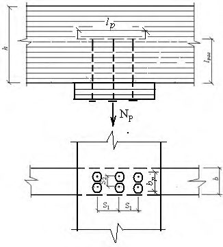
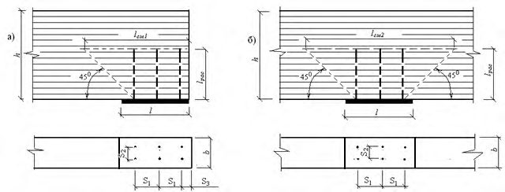
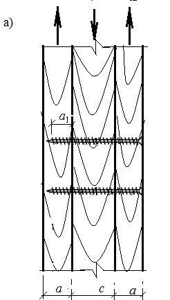
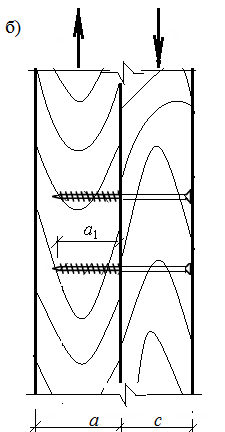
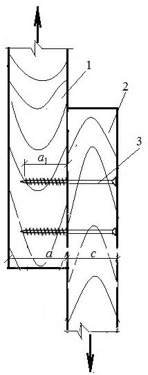
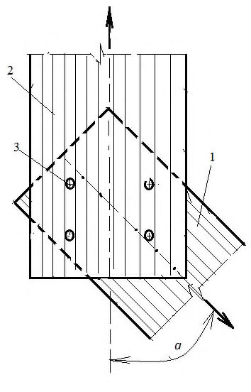
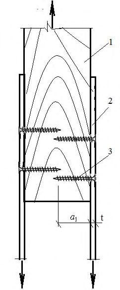

СП 299.1325800.2017 «Конструкции деревянные с узлами на винтах. Правила проектир»
О документе: разработчики, утверждение, регистрация, ключевые слова
- 1 ИСПОЛНИТЕЛЬ - АО «НИЦ «Строительство» - ЦНИИСК им. В. А. Кучеренко
- 2 ВНЕСЕН Техническим комитетом по стандартизации ТК 465 «Строительство»
3 ПОДГОТОВЛЕН к утверждению Департаментом градостроительной деятельности и архитектуры Министерства строительства и жилищно-коммунального хозяйства Российской Федерации (Минстрой России)
4 УТВЕРЖДЕН приказом Министерства строительства и жилищно-коммунального хозяйства Российской Федерации от 16 августа 2017 г. № 1133/пр и введен в действие с 17 февраля 2018 г.
5 ЗАРЕГИСТРИРОВАН Федеральным агентством по техническому регулированию и метрологии (Росстандарт)
- 6 ВВЕДЕН ВПЕРВЫЕ
В случае пересмотра (замены) или отмены настоящего свода правил соответствующее уведомление будет опубликовано в установленном порядке. Соответствующая информация, уведомление и тексты размещаются также в информационной системе общего пользования - на официальном сайте разработчика (Минстрой России) в сети Интернет
© Минстрой России, 2017
Настоящий нормативный документ не может быть полностью или частично воспроизведен, тиражирован и распространен в качестве официального издания на территории Российской Федерации без разрешения Минстроя России
Дата введения - 2018-02-17
УДК 624.011.1.04(083.74)
Ключевые слова: древесина, древесина слоистая из клееного шпона (LVL), фанера, винт, шуруп, глухарь, саморез, влажность, расчет, узловое соединение, сорт, класс прочности, расчетная несущая способность, выдергивание, продавливание, смятие под головкой, шов сплачивания, осевое усилие со сдвигом, устойчивость, потайная головка, длина анкеровки
Введение
Настоящий свод правил разработан с целью повышения уровня безопасности в зданиях и сооружениях людей и сохранности материальных ценностей в соответствии с Федеральным законом от 30 декабря 2009 г. № 384-ФЗ «Технический регламент о безопасности зданий и сооружений», выполнения требований Федерального закона от 23 ноября 2009 г. № 261-ФЗ «Об энергосбережении и повышении энергетической эффективности и о внесении изменений в отдельные законодательные акты Российской Федерации».
Свод правил выполнен АО «НИЦ «Строительство» - ЦНИИСК им. В.А. Кучеренко: канд. техн. наук А.А. Погорельцев , д-р техн. наук С.Б. Турковский , канд. техн. наук П.Н. Смирнов , при участии д-ра техн. наук, проф. А.Я. Найчука , инженера Е.В. Маркечко (БрГТУ), д-ра техн. наук, проф. Е.Н. Серова (ГАСУ) .
1Область применения
2Нормативные ссылки
- В настоящем своде правил использованы нормативные ссылки на следующие документы:
- ГОСТ 1144-80 Шурупы с полукруглой головкой. Конструкция и размеры
- ГОСТ 1146-80 Шурупы с полупотайной головкой. Конструкция и размеры
- ГОСТ 2695-83 Пиломатериалы лиственных пород. Технические условия
- ГОСТ 3916.1-96 Фанера общего назначения с наружными слоями из шпона лиственных пород. Технические условия
- ГОСТ 3916.2-96 Фанера общего назначения с наружными слоями из шпона хвойных пород. Технические условия
- ГОСТ 8486-86 Пиломатериалы хвойных пород. Технические условия
- ГОСТ 9462-88 Лесоматериалы круглые. Технические условия
- ГОСТ 9463-2016 Лесоматериалы круглые хвойных пород. Технические условия
- ГОСТ 11539-2014 Фанера бакелизированная. Технические условия
- ГОСТ 13913-78 Пластики древесные слоистые (ДСП). Технические условия
- ГОСТ 16483.0-89 Древесина. Общие требования к физико-механическим испытаниям
- ГОСТ 16483.1-84 Древесина. Метод определения плотности
- ГОСТ 20850-2014 Конструкции деревянные клееные несущие. Общие технические условия
- ГОСТ 26816-2016 Плиты цементно-стружечные. Технические условия
- ГОСТ 33080-2014 Конструкции деревянные. Классы прочности конструкционных пиломатериалов и методы их определения
- ГОСТ 33082-2014 Конструкции деревянные. Методы определения несущей способности узловых соединений
\_\_\_\_\_\_\_\_\_\_\_\_\_\_\_\_\_\_\_\_\_\_\_\_\_\_\_\_\_\_\_\_\_\_\_\_\_\_\_\_\_\_\_\_\_\_\_\_\_\_\_\_\_\_\_\_\_\_\_\_\_\_\_\_\_\_\_\_\_\_\_\_\_\_
СП 16.13330.2011 «СНиП II-23-81* Стальные конструкции» (с изменением № 1)
КОНСТРУКЦИИ ДЕРЕВЯННЫЕ С УЗЛАМИ НА ВИНТАХ Правила проектирования
Timber structures with nodes on the screws. The rules of design
СП 20.13330.2011 «СНиП 2.01.07-85* Нагрузки и воздействия» СП 64.13330.2011 «СНиП II-25-80 Деревянные конструкции»
Примечание - При пользовании настоящим сводом правил целесообразно проверить действие ссылочных документов в информационной системе общего пользования - на официальном сайте федерального органа исполнительной власти в сфере стандартизации в сети Интернет или по ежегодному информационному указателю «Национальные стандарты», который опубликован по состоянию на 1 января текущего года, и по выпускам ежемесячного информационного указателя «Национальные стандарты» за текущий год. Если заменен ссылочный документ, на который дана недатированная ссылка, то рекомендуется использовать действующую версию этого документа с учетом всех внесенных в данную версию изменений. Если заменен ссылочный документ, на который дана датированная ссылка, то рекомендуется использовать версию этого документа с указанным выше годом утверждения (принятия). Если после утверждения настоящего свода правил в ссылочный документ, на который дана датированная ссылка, внесено изменение, затрагивающее положение на которое дана ссылка, то это положение рекомендуется применять без учета данного изменения. Если ссылочный документ отменен без замены, то положение, в котором дана ссылка на него, рекомендуется применять в части, не затрагивающей эту ссылку. Сведения о действии сводов правил целесообразно проверить в Федеральном информационном фонде стандартов.
3Термины и определения
В настоящем своде правил применены термины и определения по ГОСТ 8486, СП 64.13330 и другим нормативным документам, на которые даны ссылки в тексте, а также следующие термины с соответствующими определениями:
- 3.1винт
- Стальной стержень с головкой для передачи крутящего момента и спиральной нарезкой, образующей резьбу в детали, который служит для соединения деталей путем ввинчивания.
- 3.2шуруп
- Винт со стержнем конической формы и прорезью в головке для завинчивания его в деревянные изделия.
- 3.3глухарь
- Шуруп большого диаметра с квадратной или шестигранной головкой.
- 3.4саморез
- Винт, ввинчиваемый непосредственно в деревянное изделие без предварительного сверления.
- 3.5древесина перекрестноклееная конструкционная; ДПК (CLT)
- Изготовленная заводским способом деревянная массивная плита, состоящая не менее чем из трех ортогонально склеенных слоев цельных или срощенных по длине на зубчатое соединение досок и предназначенная для использования в несущих и ограждающих строительных конструкциях.
- 3.6плиты с ориентированной стружкой; ОСП (OSB)
- Листовой материал, изготовленный из склеенной между собой древесной стружки определенной формы, ориентированной в наружных слоях преимущественно параллельно ее длине или ширине, а во внутреннем слое - перпендикулярно ее направлению или расположенной произвольно.
- 3.7древесина клееная из шпона; ДКШ (LVL)
- Конструкционный древесный материал, состоящий из склеенных между собой слоев срощенных по длине листов лущеного шпона толщиной не менее 3 мм.
4Обозначения и сокращения
В настоящем своде правил использованы обозначения и сокращения, принятые в СП 64.13330, СП 16.13330, а также обозначения, приведенные ниже:
- d - наружный диаметр резьбы винта, шурупа;
- d1 - внутренний диаметр резьбы винта, шурупа;
- dh - диаметр головки винта, шурупа или наружный диаметр шайбы;
- ds - диаметр гладкой части стержня или внутренний диаметр шайбы;
- d 0 - диаметр просверленного отверстия под винт, шуруп;
- l - длина резьбы винта, шурупа;
- l в - длина винта, шурупа;
- n - число винтов, шурупов в соединении;
- n рас - расчетное число винтов, шурупов в соединении;
- S 1 - шаг винтов, шурупов вдоль волокон;
- S 2 - шаг винтов, шурупов поперек волокон;
- S 3, с - расстояние от оси винта до ненагруженного торца элемента;
- S 3, t - расстояние от оси винта до нагруженного торца элемента;
- S 4, с - расстояние от оси винта до ненагруженной грани элемента;
- S 4, t - расстояние от оси винта до нагруженной грани элемента.
5Общие положения
6Требования к элементам соединений
6.1Требования к винтам и шурупам
Некоторые типы винтов приведены на рисунке 1.

- а - винт с полной резьбой и круглой головкой; б - винт с полной резьбой и потайной головкой; в - винт с полной резьбой и тарельчатой головкой; г - саморез с неполной резьбой (гладкой частью) и потайной головкой; д - саморез с полной резьбой и потайной головкой; е -винт с неполной резьбой (гладкой частью) и потайной головкой
Рисунок 1 - Схемы некоторых типов винтов
При изгибе винтов под углом 45 о в них не должно возникать трещин.
Таблица 1 Нормативные сопротивления материала винтов при их растяжении
| Диаметр резьбы d , мм | Нормативное сопротивление R yn , Н/мм² | Нормативное сопротивление R yn , Н/мм² | Нормативное сопротивление R yn , Н/мм² |
|---|---|---|---|
| Диаметр резьбы d , мм | Винт из углеродистой стали | Винт из углеродистой стали | Винт из нержавеющей стали |
| Диаметр резьбы d , мм | с неполной резьбой | с полной резьбой | с неполной резьбой |
| От 3,5 до 6 | Более 850 | Более 900 | Более 500 |
| Более 6 до 16 | Более 920 | Более 920 | Более 550 |
| Примечание - При определении нормативных сопротивлений площадь винта A = π d 1 2 /4, где d 1 - внутренний диаметр резьбы. | Примечание - При определении нормативных сопротивлений площадь винта A = π d 1 2 /4, где d 1 - внутренний диаметр резьбы. | Примечание - При определении нормативных сопротивлений площадь винта A = π d 1 2 /4, где d 1 - внутренний диаметр резьбы. | Примечание - При определении нормативных сопротивлений площадь винта A = π d 1 2 /4, где d 1 - внутренний диаметр резьбы. |
Таблица 2 Нормативные значения крутящего момента Mtn материала винтов при его ввинчивании
| Нормативное значение M tn , Нм | Нормативное значение M tn , Нм | Нормативное значение M tn , Нм | |
|---|---|---|---|
| Диаметр резьбы d , мм | Винт из углеродистой стали | Винт из углеродистой стали | Винт из нержавеющей стали |
| с неполной резьбой | с полной резьбой | с неполной резьбой | |
| 3 | 1,8 | 2,1 | 1,5 |
| 3,5 | 2.0 | 2,3 | 1,7 |
| 4 | 3,0 | 3,3 | 2,4 |
| 4,5 | 4,9 | 4,7 | 3,0 |
| 5,0 | 7,4 | 7,7 | 5,0 |
| 6,0 | 12,0 | 13,2 | 8,0 |
| 7,0 | 20,0 | 18,0 | 12,0 |
| 8,0 | 27,8 | 28,0 | 16,0 |
| 9 | 40,0 | 27,1 | 15,1 |
| 10 | 40,1 | 36,0 | 23,1 |
| 11 | 42,1 | 60,0 | 33,1 |
| 12 | 58,0 | 62,3 | 34,1 |
- Таблица 3 Нормативные значения изгибающего момента Myn пластической деформации
СП 299.1325800.2017
| Нормативное значение M tn , Нм | Нормативное значение M tn , Нм | Нормативное значение M tn , Нм | |
|---|---|---|---|
| Диаметр резьбы d , мм | Винт из углеродистой стали | Винт из углеродистой стали | Винт из нержавеющей стали |
| с неполной резьбой | с полной резьбой | с неполной резьбой | |
| 3 | 2,0 | 2,1 | 1,5 |
| 3,5 | 2.1 | 2,3 | 1,6 |
| 4 | 3,3 | 3,5 | 2,2 |
| 4,5 | 4,5 | 4,7 | 3,0 |
| 5,0 | 5,9 | 6,1 | 3,9 |
| 6,0 | 9,5 | 10,2 | 6,3 |
| 7,0 | 13,4 | 14,0 | 10,0 |
| 8,0 | 20,0 | 20,2 | 13,4 |
| 9 | 27,0 | 27,1 | 15,1 |
| 10 | 35,6 | 36,2 | 24,1 |
| 11 | 40,1 | 45,8 | 30,1 |
| 12 | 43,2 | 50,3 | 32,1 |
Используемые в узловых соединениях элементов ДК винты должны удовлетворять основным параметрам, приведенным в таблице 4.
Предельные отклонения по геометрическим параметрам винтов не должны превышать допуски, установленные в стандартах на их изготовление.
Таблица 4 - Основные параметры винтов
В миллиметрах
| Внешний диаметр резьбы винта d | Внутренний диаметр резьбы винта d 1 | Шаг резьбы P |
|---|---|---|
| 3 | 2 | 1,25 |
| 3,5 | 2,25 | 2,15 |
| 4 | 2,65 | 2,35 |
| 5 | 3,5 | 2,75 |
| 6 | 3,9 | 4,5 |
| 7 | 4,6 | 4,8 |
| 8 | 5,4 | 5,2 |
| 9 | 5,9 | 5,4 |
| 10 | 6,4 | 5,6 |
| 11 | 6,6 | 5,8 |
| 12 | 6,8 | 6,0 |
| 16 | 12 | 10 |
| 20 | 14 | 12 |
6.2Требования к материалам элементов узловых соединений
7Расчет соединений
7.1Соединения с винтами, работающими на осевое растяжение
где T в - расчетная несущая способность винта при выдергивании из древесины ДКШ под углом к направлению волокон, Н;
T см - расчетная несущая способность винта при смятии древесины ДКШ под углом к направлению волокон под головками винтов, Н. T см определяют в том случае, если в соединении использованы винты с неполной резьбой, т. е. где усилие растяжения винта передается на соединяемый элемент через площадки смятия под головками винтов;
T р.в - расчетная несущая способность узлового винта при растяжении, Н.
Т
где R cр - расчетное сопротивление выдергиванию винта под углом к направлению волокон на единицу поверхности контакта нарезной части винта с древесиной LVL, CLT, образованной по наружному диаметру, Н/мм² ; d - наружный диаметр резьбы, мм; l рас - расчетная длина винта, равная длине нарезной его части, завинченной в соединяемый элемент, уменьшенная на 1,8 d , мм;
- - угол наклона продольной оси винта по отношению к направлению волокон древесины, град;
- md - коэффициент, учитывающий изменение расчетного сопротивления R cр выдергиванию винта из древесины под углом к направлению волокон в зависимости от диаметра d винта, вычисляемый по формуле
ml - коэффициент, учитывающий изменение расчетного сопротивления R cр выдергиванию винта из древесины (для LVL - вдоль и поперек волокон, CLT поперек волокон) под углом к направлению волокон в зависимости от расчетной длины l рас винта в узловом соединении, следует вычислять по формуле
Примечание - В случае использования в узловых соединениях винтов, параметры которых не удовлетворяют требованиям таблиц 1-4, расчетную несущую способность T в следует определять экспериментальным путем в соответствии с требованиями ГОСТ 33082.
Расчетное сопротивление R cр выдергиванию винта под углом к направлению волокон на единицу поверхности контакта нарезной части винта с древесиной LVL, CLT, образованной по наружному диаметру, в узловом соединении вычисляют по формуле
где R ср90 - расчетное сопротивление выдергиванию винта под углом = 90 о к направлению волокон на единицу поверхности контакта нарезной части винта с древесиной ДКШ, ДПК в узловом соединении с винтами 3 d 20 мм, Н/мм² .
Расчетное сопротивление R ср90 выдергиванию винта из древесины ДКШ, ДПК под углом = 90 о к направлению волокон на единицу поверхности контакта нарезной части винта с древесиной ДКШ, ДПК, образованной по наружному диаметру, в узловом соединении с винтами вычисляют по формуле
- где * ср90 R = 2,8 Н/мм² - расчетное сопротивление выдергиванию винта из древесины плотностью н = 500 кг/м³ под углом = 90 о к направлению волокон на единицу поверхности контакта нарезной части винта с древесиной ДКШ, ДПК, образованной по наружному диаметру в соединении с винтами, для ДКШ -* ср90 R = 2,9 Н/мм² ; а для ДПК с плотностью ламелей н = 500 кг/м³ * R =2,8 Н/мм² ;
m - коэффициент, учитывающий изменение расчетного сопротивления * ср90 R выдергиванию из древесины поперек волокон (для ДКШ - вдоль и поперек волокон, для ДПК - поперек волокон) от нормативного значения плотности н древесины в узловом соединении, который следует вычислять по формуле
где н - нормативное значение плотности древесины, кг/м³ , в соответствии с требованиями ГОСТ 16483.1 и СП 64.13330; m в, m Т, m Д, m Н и m а - коэффициенты условия работы в соответствии с требованиями раздела 5 СП 64.1330.2011.
где R cм - расчетное сопротивление смятию древесины ДКШ, ДПК под углом к направлению волокон, Н/мм² , в соответствии с требованиями раздела 5 СП 64.13330.2011;
F см - расчетная площадь смятия древесины под головкой винта, вычисляемая по формуле
где dh - диаметр головки винта или наружный диаметр шайбы, мм; ds - диаметр гладкой части стержня или внутренний диаметр шайбы, мм.
где N р - расчетное значение осевого растягивающего усилия, действующего на винты в узловом соединении.
где R р - расчетное сопротивление растяжению древесины под углом , Н/мм² , вычисляемое по формуле
к волокнам (см. рисунок
F рас - расчетная площадь растяжения древесины под углом 2), мм² , на уровне обрыва винтов, вычисляют по формуле F рас = b р ·l р, где l р = ( n 1 + 1) · S 1 (см. рисунок 2); b р =( m + 1) S 2 (см. рисунок 2); b р
- расчетная ширина поперечного сечения элемента в зоне установки винтов, мм;
S 1 - шаг винтов вдоль волокон древесины, мм;
S 2 - шаг винтов поперек волокон древесины, мм; n 1 - число винтов в одном ряду; m - число рядов винтов поперек волокон. а - с винтами под углом 90 о к волокнам; б - с винтами под углом к волокнам

Рисунок 2 - Схемы узловых соединений с винтами, работающими на осевое растяжение
7.2Соединения с винтами, работающими на осевое сжатие
где α c N - расчетное осевое сжимающее усилие, действующее на винты в узловом соединении, расположенные под углом 45 о ≤ ≤ 90 о к волокнам древесины, Н; T см1 - расчетная несущая способность узлового соединения от смятия древесины над опорной пластиной, Н;
T в.с - расчетная несущая способность винта при вдавливании его в древесину под углом к направлению волокон, Н;
T в - расчетная несущая способность винта, вычисленная из условия его устойчивости, заанкеренного в массиве древесины, Н;
T см2 - расчетная несущая способность узлового соединения от смятия массива древесины на уровне обрыва винтов, Н;
- n - число винтов в соединении.
F
- длина опорной пластины; b - ширина поперечного сечения усиливаемого элемента. рас1 - расчетная площадь смятия древесины, мм² , над опорной пластиной, принимаемая как F рас1 = b · l (см. рисунок 2), где l

где φ - коэффициент устойчивости при центральном сжатии винта, ввинченного в массив древесины;
T в1 - расчетная несущая способность винта по прочности на сжатие, Н. Коэффициент устойчивости φ следует вычислять по формуле
где - коэффициент, вычисляемый по формуле
- условная гибкость, вычисляемая по формуле
где , 4 π 2 1 1 y в R d Т = d 1 и Ry - внутренний диаметр резьбы и расчетное сопротивление материала винта по пределу текучести;
T в1, у - расчетная несущая способность винта при сжатии с учетом его защемления в массиве древесины, вычисляемая по формуле
где - коэффициент, вычисляемый по формуле
- E - модуль упругости материала винта, который для стали принимают равным 210 000 Н/мм² ;
- Iн - момент инерции сечения винта, мм 4 , вычисляемый по формуле
d - наружный диаметр резьбы винта, мм;
н - нормативное значение плотности древесины, кг/м³ ; d 1 - внутренний диаметр резьбы винта, мм.
где R см - расчетное сопротивление смятию древесины под углом , Н/мм² , определяемое по формуле (2) CП 64.13330.2011;
F рас2 - расчетная площадь смятия древесины (рисунок 3), мм² , принимаемая равной:
- для крайней опоры F рас2 = b · l cм1, где l cм1 = l рас + ( n 1 -1) ·S 1 + min ( l 1 ; S 3);
- промежуточной опоры F рас2 = b · l cм2, где l cм2 = 2 l рас + ( n 1 -1) ·S 1 (рисунок 3).
Здесь l рас - расчетная длина винта в соответствии с требованиями 6.1.3; b - ширина поперечного сечения усиливаемого элемента, мм;
S 1 и S 3 - шаг винтов вдоль волокон древесины и расстояние от кромки (торца) элемента до оси винта, мм; n 1 - число винтов в одном ряду.
7.3Соединения с винтами, работающими на сдвиг

а и с - толщины соединяемых элементов; а

1 - длина ввинченной части в элемент а) - симметричное; б) - несимметричное
Рисунок 4 - Схема соединения на винтах
- а) на коэффициент k (таблица 21 СП 64.13330.2011) при расчете на смятие древесины в нагельном гнезде;
- б) величину k при расчете винта на изгиб; угол следует принимать равным большему из углов смятия нагелем элементов, прилегающих к рассматриваемому шву.
1 и 2 - деревянные элементы; 3 - винт; а и с - толщины соединяемых элементов; а 1 длина ввинченной части в элемент

Рисунок 5 - Схема соединения элементов под углом к волокнам древесины с использованием винтов
Соединения со стальными пластинами, в которых в качестве связей использованы винты, следует рассчитывать в соответствии с требованиями 7.3.3-7.3.5. Стальные накладки следует проверять на растяжение по ослабленному сечению и на смятие под подголовником или стержнем винта в соответствии с указаниями СП 16.13330.
1 - деревянный элемент; 2 - стальная накладка; 3 - винт; а 1 - длина ввинченной части в элемент; t - толщина стальной пластины

Рисунок 6 - Схема винтового соединения со стальными накладками
7.4Соединения с винтами, работающими на совместное восприятие осевого и сдвигающего усилий
Соединения с винтами, работающими на совместное восприятие осевого и сдвигающего усилий, должны удовлетворять следующему условию:
где T - расчетная несущая способность соединения по восприятию осевого усилия (растяжения, сжатия), Н, вычисляемая согласно требованиям 7.1 или 7.2;
N р - расчетное значение осевого усилия, Н, действующего в узле, вычисляемое на основании сочетания воздействий в соответствии с требованиями СП 20.13330; Tv - расчетная несущая способность соединения по восприятию сдвигающего усилия, Н, вычисляемая в соответствии с требованиями 7.3;
Nv - расчетное значение сдвигающего усилия, Н, действующего в узле, вычисляемое на основании сочетания воздействий в соответствии с требованиями СП 20.13330.
8Требования по конструированию соединений
Таблица 5 Рекомендуемые диаметры монтажных отверстий для LVL и CLT
В миллиметрах
| Наружный диаметр резьбы винта d | Диаметр монтажного отверстия d м |
|---|---|
| 3-3,5 | 2 |
| 4-5 | 2,5 |
| 6-7 | 4 |
| 8-9 | 5 |
| 10 и 11 | 6 |
| 12 | 7 |
| 16 | 12 |
| 20 | 14 |
Примечание - Для саморезов диаметр монтажных отверстий не должен быть больше внутреннего диаметра резьбы d 1 .
- S 1 ≥ 6 d - для элементов из цельной и клееной древесины;
S 1 ≥ 8 d - для элементов из ДКШ;
S 2 ≥ 5 d - для элементов из цельной и клееной древесины;
S 2 ≥ 6 d - для элементов из ДКШ;
S 3 ≥ 10 d - для элементов из цельной и клееной древесины;
S 3 ≥ 10 d - для элементов из ДКШ.
Для винтов d 6 мм расстояние S 1 15 d , S 2 5 d и S 3 10 d .
Расстановку винтов d 6 мм в опорных площадках следует осуществлять в два ряда (рисунок 3).
Винты, воспринимающие сжимающие усилия, должны быть утоплены в деревянный элемент таким образом, чтобы их головки были заподлицо с внешней поверхностью.
Толщина t прикрепляемых древесных материалов должна составлять t ≥ 1,2 d.

СП 299.1325800.2017
Таблица 6 - Минимальные величины шага, расстояния до торца или кромки при использовании винтов диаметром d ≤ 6 мм в соединениях элементов, работающих на сдвиг
| Величина шага, расстояние и угол (см. рисунок 7) | Предварительно просверленное отверстие | Предварительно просверленное отверстие | Предварительно просверленное отверстие для ρ k > 500 кг/м³ |
|---|---|---|---|
| Величина шага, расстояние и угол (см. рисунок 7) | k 420 кг/м³ | 420 кг/м³ k 500 кг/м³ | Предварительно просверленное отверстие для ρ k > 500 кг/м³ |
| Шаг вдоль волокон - S 1 ; 0° 360° | d 5 мм; (5+5 cos ) d d 5 мм; (5 + 7 cos ) d | (7 + 8 cos ) d | (4 + cos ) d |
| Шаг поперек волокон - S 2 ; 0° 360° | 5 d | 7 d | (4 + sin ) d |
| Расстояние до нагруженного торца S 3 t ; -90° 90° | (10 + 5 cos ) d | (15 + 5 cos ) d | (7 + 5 cos ) d |
| Расстояние до ненагруженного торца S 3 с ; -90° 270° | 10 d | 15 d | 7 d |
| Расстояние до нагруженной кромки S 4 t ; 0° 180° | d 5 мм; (5 + 2sin ) d d 5 мм; (5 + 5sin ) d | d 5 мм; (7+2sin ) d d 5 мм; (7 + 5sin ) d | d 5 мм; (3 + 2sin ) d d 5 мм; (3 + 4sin ) d |
| Расстояние до ненагруженной кромки S 4 с ; 180° 380° | 5 d | 7 d | 3 d |
Таблица 7 Минимальные величины шага, расстояния до торца или кромки при использовании винтов диаметром d 6 мм в соединениях элементов, работающих на сдвиг
| Минимальная величина шага или расстояния | Минимальная величина шага или расстояния | |
|---|---|---|
| Величина шага или расстояния (рисунок 7) | Угол | Минимальный размер |
| Шаг вдоль волокон - S 1 | 0° 360° | (4+ cos ) d |
| Шаг поперек волокон - S 2 | 0° 360° | 4 d |
| Расстояние до нагруженного торца S 3 t | -90° 90° | max (7 d ; 80 мм) |
| Расстояние до ненагруженного торца S 3 с | 90° 150° 150° 210° 210° 270° | (1 + 6sin ) d 4 d (1 + 6sin ) d |
| Расстояние до нагруженной кромки S 4 t | 0° 180° | max[(2 + 2sin ) d ; 3 d ] |
| Расстояние до незагруженного конца S 4 с | 180° 360° | 3 d |